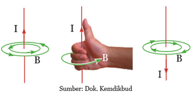
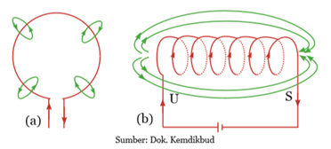

3. Induksi Magnet dan Gaya Lorentz
a. Induksi Magnet
Konsep induksi magnet berawal dari tidak terkendalinya putaran jarum kompas yang ada di kapal laut saat petir menyambar. Tahukah kamu, apa yang disebut induksi magnet. Mengapa induksi magnet berhubungan dengan peristiwa tak terkendalinya putaran jarum kompas yang ada di kapal laut saat petir menyambar. Sebuah penelitian yang dilakukan oleh Hans Christian Oersted (1820) yang menunjukkan bahwa arus listrik dapat menimbulkan medan magnet. Caranya adalah dengan mengamati pergerakan jarum kompas saat diletakkan di dekat kabel yang dialiri arus listrik. Percobaan ini kemudian dikenal dengan Percobaan Oersted.
Arah medan magnet dan arah arus dapat ditunjukkan dengan menggunakan kaidah tangan kanan. Coba perhatikan gambar dibawah ini Arus listrik ditunjukkan dengan huruf I dan medan magnet ditunjukkan dengan huruf B.

Jika pada kawat lurus, medan magnet terbentuk melingkari arah arus, bagaimana dengan kabel yang dibentuk melingkar dan kumparan? Coba perhatikan Gambar dibawah. Pada kumparan medan magnet tampak melingkari kabel, tetapi pada kumparan medan magnetnya seolah-olah membentuk kutub utara dan selatan pada ujung-ujungnya, persis seperti pada magnet batang.

Arah medan magnet dan arah arus dapat ditunjukkan dengan menggunakan kaidah tangan kanan. Coba perhatikan gambar dibawah ini Arus listrik ditunjukkan dengan huruf I dan medan magnet ditunjukkan dengan huruf B.
Jika pada kawat lurus, medan magnet terbentuk melingkari arah arus, bagaimana dengan kabel yang dibentuk melingkar dan kumparan? Coba perhatikan Gambar dibawah. Pada kumparan medan magnet tampak melingkari kabel, tetapi pada kumparan medan magnetnya seolah-olah membentuk kutub utara dan selatan pada ujung-ujungnya, persis seperti pada magnet batang.

Mari Mengamati
Untuk lebih memahami pengaruh arus listrik terhadap medan magnet, cobalah amati vidio berikut.
Video 7. Pengaruh arus listrik terhadap medan magnet
Video 7. Pengaruh arus listrik terhadap medan magnet

Mari Mencoba
Petunjuk :
- Soal berupa pilihan ganda berjumlah tiga soal.
- gunakan tombol dibawah soal untuk beralih ke soal yang lain.
- Pada saat jawaban dipilih, hasil benar atau salah akan langsung terlihat.
Apa yang terjadi pada kompas ketika diletakkan diatas kawas berarus listrik ….


Kesimpulan
Konsep induksi magnet berawal dari tidak terkendalinya putaran jarum kompas yang ada di kapal laut saat petir menyambar. Seperti yang telah kita lakukan pada percobaan di atas. Ternyata arus listrik dapat menimbulkan medan magnet yang dapat mempengaruhi arah jarum kompas. Ketika jarum kompas positif berada pada titik awal arus listrik positif maka jarum kompas menyimpang ke kiri. Dan ketika jarum kompas utara berada pada titik awal arus listrik negatif maka jarum kompas menyimpang ke kanan.